Meet the dedicated trainers, board members, and wonderful German Shepherd Dogs that make Summer's Dogs a true labor of love.
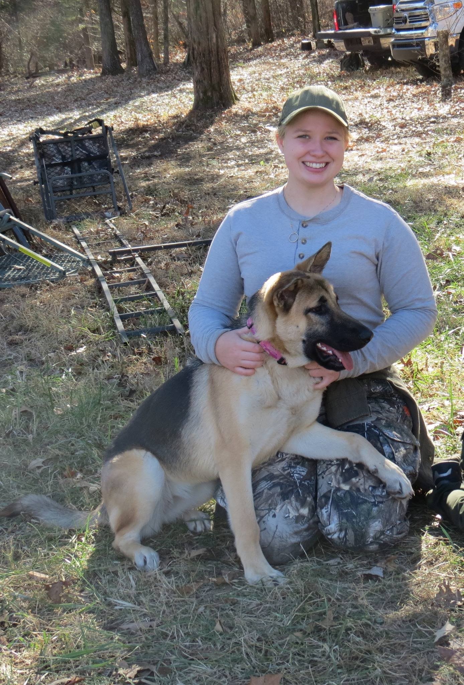
Main Trainer & Director
My whole life has been filled with well-trained dogs thanks to my dad, and I'm continuing the tradition. My first babysitter was King Man, my dad's heart dog. My love for service dogs began during college when my need for assistance became apparent. Summer was my first service dog that I trained with the help of my dad.
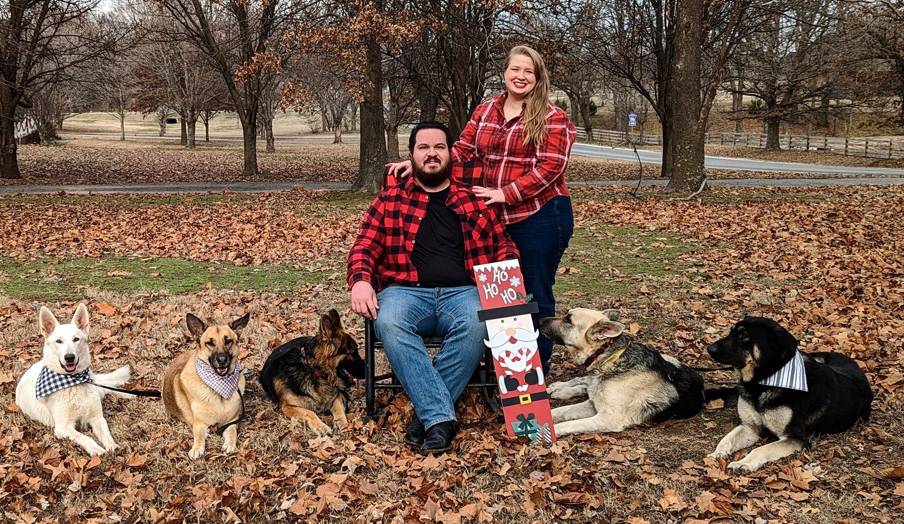
Board Member & Technical Lead
Daniel has been a board member for the life of the program. He grew up with handfuls of rescue dogs over the years where they found loving homes. Daniel takes the role of animal tolerance builder and technical director for Summer’s Dogs.
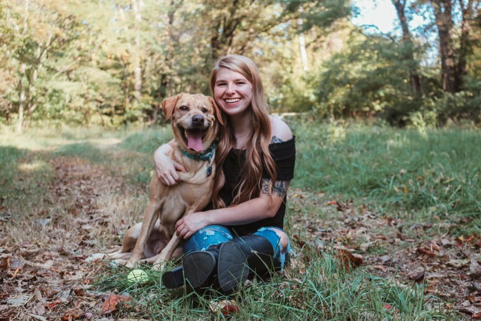
Board Member
Emily joined the board in 2023 with incredible enthusiasm, bringing energy, compassion, and organizational support to ensure our service dog candidates thrive.
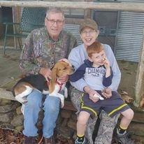
Board Member & Marketing
Debbie has served on the board since the inception of the program. With a lifetime of spoiled, beloved dogs, Debbie brings brilliant ideas for outreach, marketing, and community exposure.
The incredible dogs that form the backbone of our service, therapy, and breeding lines.

Retired Service Dog • The Inspiration
Summer Time is the heart of the program and who it is named after. Summer is happily enjoying service dog retirement! She loves soft baby dolls and collects them all day. A rescue who needed love and help, Summer ended up helping me more. When excited, her whole body wiggles with joy!
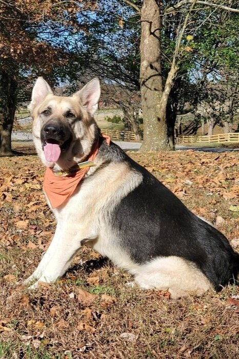
28" at the Shoulder • Gentle Giant
Bull is our "Big Boy" who is an old man in spirit. A giant head, happy face, and gentle eyes. Bull's favorite toy is a boat buoy that he loves to show off to everyone. He's a huge love bug who just wants head pets, belly rubs, and fetch.
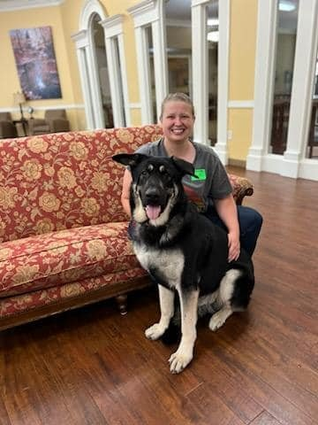
AKC GSD • 120 lbs • 33" at Shoulder
Storm is our goofy dopey boy! He loves spreading smiles as a certified therapy dog with Love on a Leash—visiting the local library for story time is his favorite. Storm wins every heart he meets with his laid-back, gentle demeanor.
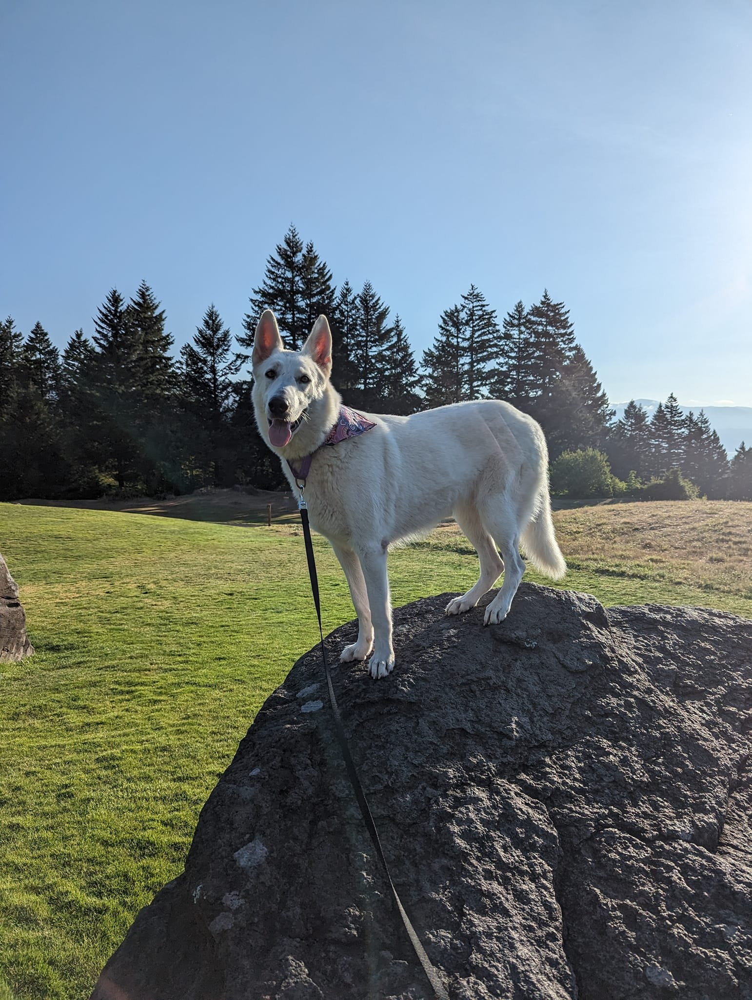
AKC GSD • 75 lbs • 25" at Shoulder
Lotti is our "Little Lady" and Summer's successor as Ebb's full service dog. Wild, spirited, go-go-go, and always ready for adventure. Extremely intelligent, hyper-intuitive, and a magnificent working partner.
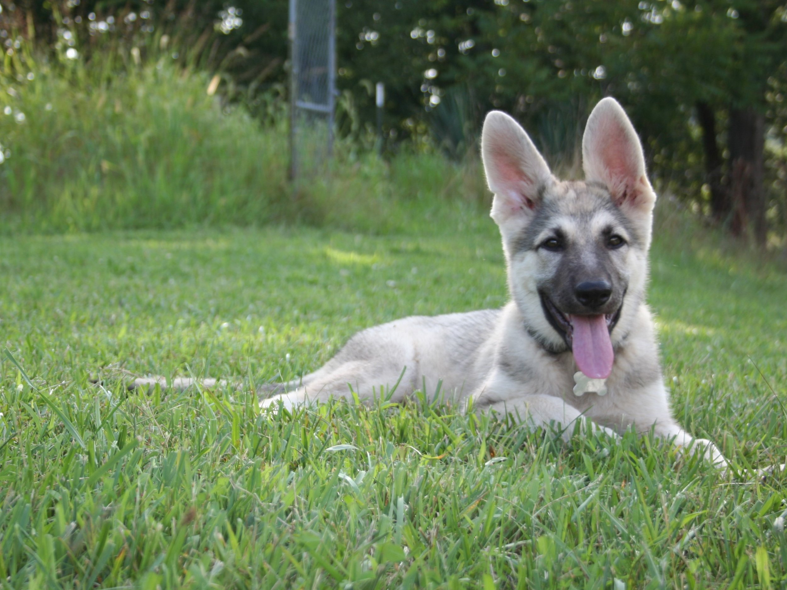
Lotti & Bull's Daughter • 50 lbs
Ozark is training to follow in her mom's footsteps as a full service dog. She displays remarkable social aptitude, rapid command learning, and the perfect combination of her parents' strength and focus.
Honoring the beloved dogs that shaped our lives, taught us training, and live forever in our hearts.

The foundational family guardians who started it all.
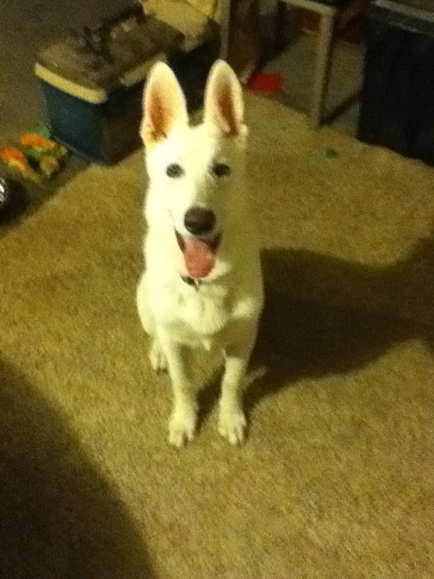
Loyal, noble, and deeply missed.
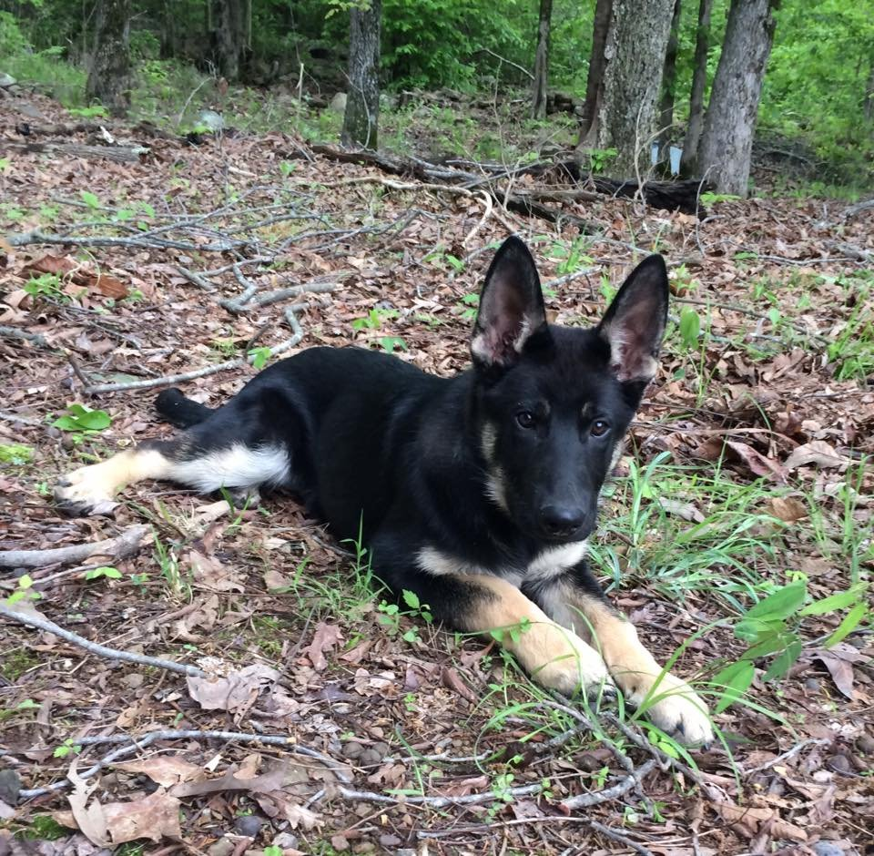
Full of personality and enduring spirit.
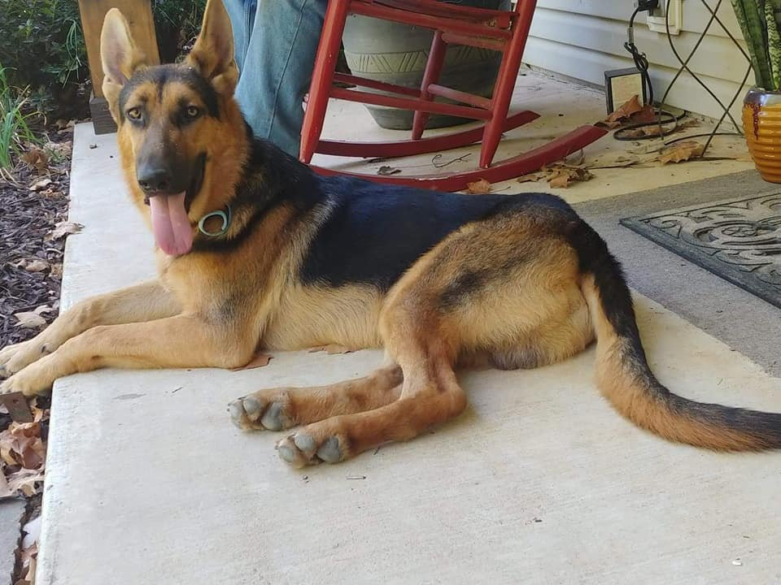
A trusted partner and guardian.
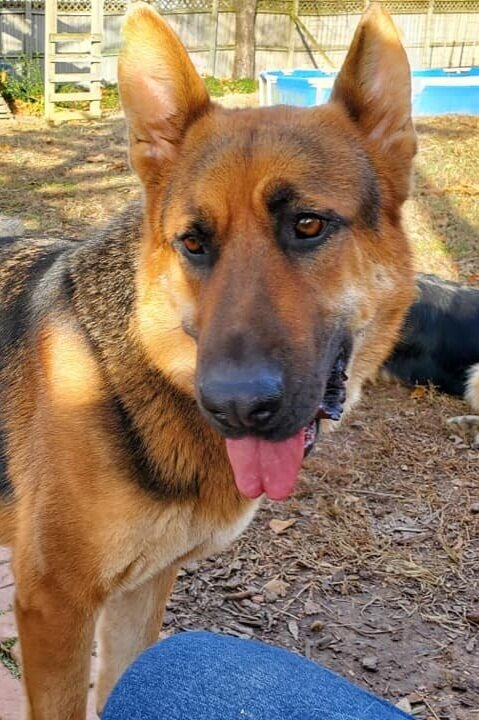
Ever watching from above.

Gentle sweetness and warmth.
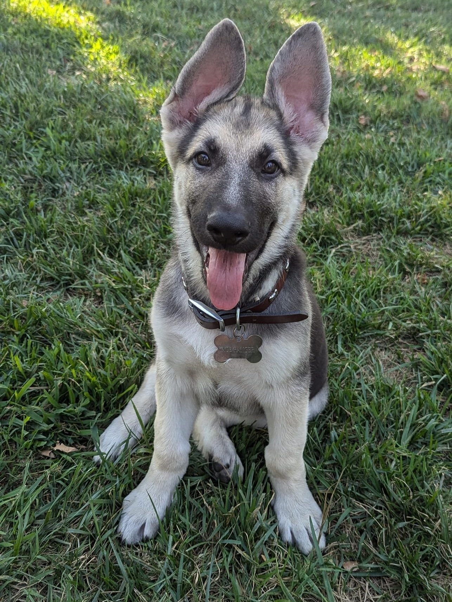
A faithful heart forever honored.

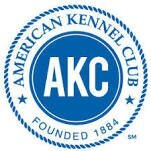